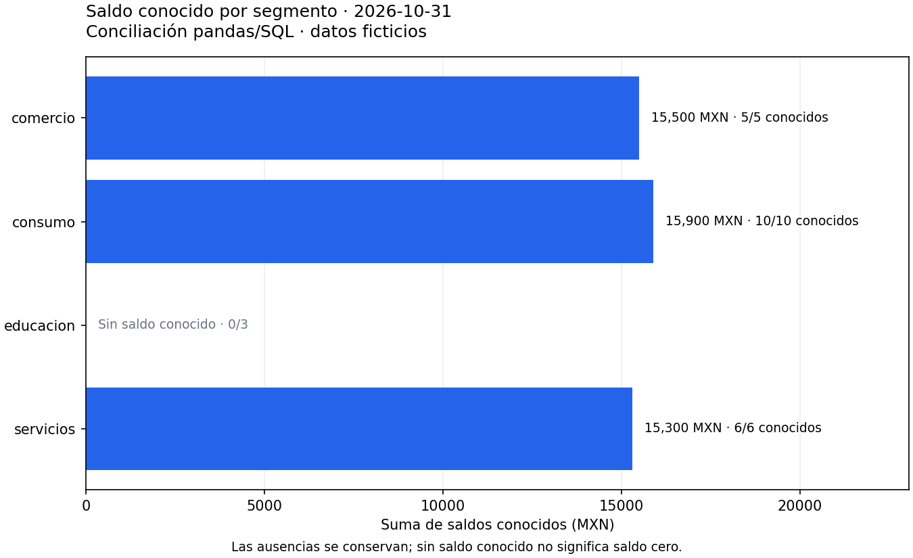

03.09 — Integración pandas y SQL
MÓDULO 03 / 03.09
Contenido / SQL y bases de datos
Inicio / Módulo 03 / Lección 03.09
| Tu sesión | Qué prepararás o comprobarás |
|---|---|
| Meta | Reconstruir y conciliar una respuesta desde SQL y pandas |
| Necesitas | Entorno con sqlite3, pandas y Matplotlib; fuentes compartidas |
| Evidencia | SQL, código, tablas y figura con interpretación y conciliación propias |
Preparación · Material de apoyo · Ir al lab · Comprobar
Propósito
Reconstruir una base ficticia, consultar desde pandas y demostrar que dos recorridos independientes responden la misma pregunta.
Antes de empezar
Completa 03.08 — Escrituras y transacciones y sus prerrequisitos; recupera el cierre de pandas. La muestra de este cierre es la de SQL, no el CSV de 02.10: preguntas y métodos se reutilizan, pero no suponemos que muestras distintas tengan idénticos totales.
Se utilizan sqlite3, pandas 2.3.3 y Matplotlib 3.10.7 como referencias declaradas en la configuración raíz, sin dependencias nuevas ni servidor. El cierre esencial usa scripts y SQL guardado; un notebook es opcional y no se exige crear uno. La muestra es la de SQL, no una entrega modificada de 03.08.
Cómo organizar la sesión
Puedes distribuir la actividad en tres sesiones: A, preparar y leer; B, calcular y conciliar; C, exportar, representar y explicar. Desarrollar estas nueve lecciones no acredita que el estudiante haya completado el módulo: hacen falta sus prácticas y evidencias.
Qué vas a aprender
- Leer SQL parametrizado desde pandas y declarar tipos y claves.
- Construir una referencia independiente desde CSV para detalle e indicadores.
- Comparar valores por clave y conciliar resumen y cobertura.
- Exportar y explicar una figura calculada desde el resumen ya comprobado.
Material de apoyo
| Recurso | Para qué sirve | Uso |
|---|---|---|
| Script de ejemplo | Consultar en lectura y conciliar contra una referencia pandas desde CSV | Para el recorrido |
| Consulta de detalle | Leer la consulta parametrizada que conserva registros | Para el recorrido |
| Consulta de resumen | Leer indicadores con las mismas reglas | Para el recorrido |
| Preparador de la base | Reconstruir la base en una ruta separada | Preparación |
| Fuentes CSV | Consultar las tres tablas originales de SQL | Entradas compartidas |
Abre cada recurso cuando aparezca en el recorrido. Lee el script y el SQL antes de ejecutarlos; contrasta resultados con las fuentes y ejemplos conocidos. Las bases y entregas se preparan en las rutas indicadas, conservando los originales y los destinos existentes. No copies ni publiques bases de práctica como parte del material del curso.
1. Una pregunta y dos recorridos comprobables
Pregunta: ¿qué saldo conocemos por segmento en octubre y qué proporción de atrasos conocidos tiene al menos 30 días? Declaramos:
- Universo: observaciones del 2026-10-31, una fila por crédito/fecha.
- Saldo: pesos mexicanos enteros o desconocido; cero es conocido.
- Confirmados: dias_atraso >= 30, una regla didáctica, no una definición regulatoria.
- Tasa: confirmados / atrasos conocidos; sin denominador, tasa ausente.
- Cobertura: atrasos conocidos / todas las observaciones del grupo.
flowchart TD
F["CSV originales: clientes, créditos, cortes"] --> B["Esquema y carga comprobados: SQLite"]
F --> P["pandas: lectura tipada, merge y groupby"]
B --> S["SQL parametrizado: detalle y resumen"]
S --> D["read_sql_query: DataFrame con contrato"]
P --> C["Comparar detalle, claves, tipos y grupos"]
D --> C
C --> G["CSV de resultados, gráfica y evidencia"]En palabras: la referencia pandas parte de los CSV y la referencia SQL de la base reconstruida. Se reúnen después de calcular, para comprobar datos y semántica antes de presentar. Calcular dos veces desde el mismo resumen SQL no sería una verificación independiente de su agrupación.
2. Reconstrucción reproducible y conservación
Reutilizamos create_load.py de 03.03 con –database para preparar una base separada en output/cartera_integracion.sqlite. El esquema y las tres entradas siguen versionados en 03.01. La base contiene 16 clientes, 24 créditos y 48 observaciones en dos fechas.
Si el archivo existe, el preparador comprueba esquema y contenido en lectura; no reinicia ni borra cambios. Para reconstruir otra vez desde cero, usa una ruta nueva, conservando la anterior. La copia modificada en 03.08 contiene otro estado y no sirve como muestra original de este cierre.
integration.py abre exclusivamente una base existente en mode=ro, comprueba sus tres tablas contra los CSV y consulta una misma instantánea mediante BEGIN. Cierra la conexión en finally. No escribe tablas ni modifica la fuente; únicamente exporta resultados si eliges –output.
La base es reproducible por entradas, esquema y pasos de carga. No necesitamos que dos archivos SQLite tengan bytes idénticos; comprobamos sus filas, claves, tipos y reglas. La reproducibilidad del análisis requiere además SQL, parámetros, versiones y decisiones del indicador.
3. Leer una consulta SQL como DataFrame
detail.sql conserva la consulta de detalle: une cortes → créditos → clientes por sus claves y filtra :fecha. Sus columnas son ID, fecha, saldo, atraso, cliente, segmento y región; el orden final es por ID.
import sqlite3
import pandas as pd
conexion = sqlite3.connect(ruta_base.resolve().as_uri() + "?mode=ro", uri=True)
try:
detalle = pd.read_sql_query(
sql_detalle,
conexion,
params={"fecha": "2026-10-31"},
dtype={"id_credito": "string", "fecha_corte": "string",
"saldo_mxn": "Int64", "dias_atraso": "Int64",
"id_cliente": "string", "segmento": "string", "region": "string"},
)
finally:
conexion.close()ruta_base es un Path y sql_detalle es el texto leído de detail.sql; el script resuelve ambos desde su carpeta. read_sql_query ejecuta SQL y devuelve un DataFrame; no traduce la consulta a operaciones pandas. params entrega valores al controlador sqlite3: no pongas comillas alrededor de :fecha ni construyas el filtro mediante f-strings. Con ? usarías una tupla y respetarías su orden.
La conexión sqlite3 está admitida directamente; no necesitamos SQLAlchemy para SQLite en esta práctica. Otros motores requieren su controlador y una ruta compatible, no sustituir el nombre del archivo por una URL cualquiera.
4. Tipos y claves no son detalles de presentación
| Campo | Contrato en este análisis | Motivo |
|---|---|---|
| id_credito, id_cliente | string | Conserva identificadores y ceros |
| fecha_corte | string YYYY-MM-DD validada | Misma representación en CSV y SQL |
| saldo_mxn, dias_atraso | Int64 nullable | Enteros conocidos y NA sin imputación |
| tasas | Float64 nullable | Decimales o tasa indefinida |
El tipo de una columna DataFrame no crea restricciones en SQLite ni convierte un CSV en datos válidos. La carga y las comprobaciones de claves siguen siendo necesarias. El índice 0, 1, 2… que recibe el DataFrame tampoco es la clave del dominio: crédito/fecha identifica observaciones.
Para este cierre mantenemos fechas como texto validado. Si necesitas funciones temporales, convierte de forma explícita en ambos recorridos, por ejemplo pd.to_datetime(…, format=‘%Y-%m-%d’, errors=‘raise’), y compara la nueva representación. read_sql_query también admite parse_dates; no asumas que SQLite entrega una fecha nativa solo porque el texto parece una fecha.
SQL NULL llega a pandas como una ausencia que depende del tipo elegido; aquí usamos NA en columnas nullable. No confundas None, NaN y NA con cero ni cambies tipos para ocultar una diferencia. La muestra usa enteros pequeños; otros contratos monetarios o valores de gran magnitud requieren revisar precisión y representación.
5. Referencia independiente desde CSV y pandas
El script lee los CSV con dtype explícito, keep_default_na=False y na_values=[’’]. Comprueba campos y claves; recupera las reglas de lectura de 02.02. Filtra la fecha y relaciona tablas con merge:
detalle = observaciones.merge(
creditos, on="id_credito", how="left", validate="many_to_one", indicator=True
)LEFT permite comprobar si algo no encontró crédito mediante _merge. El programa exige que todas las observaciones encuentren pareja, elimina esa columna y relaciona clientes con la misma comprobación. Solo entonces compara con INNER JOIN de SQL: ambas rutas deben conservar exactamente el mismo universo.
No basta con comparar sumas: una fila duplicada y otra perdida pueden compensarse. Compara columnas originales y atributos añadidos. Antes de merge, las claves son obligatorias y únicas según su tabla. Esto evita además que claves nulas se emparejen en pandas como pueden hacerlo en merge, a diferencia de igualdad SQL. Recupera las diferencias de uniones.
6. Resumir con reglas equivalentes
summary.sql agrega por segmento con COUNT, SUM y CASE; conserva conteos, suma conocida, confirmados, tasa y cobertura. El recorrido pandas aplica las mismas reglas con groupby, sin leer ese resultado para calcular:
| Regla | SQL | pandas |
|---|---|---|
| Contar observaciones | COUNT(*) | size |
| Contar conocidos | COUNT(columna) | count |
| Suma conocida, ausente si no hay conocidos | SUM(saldo_mxn) | sum(min_count=1) |
| Confirmados | COUNT(CASE WHEN atraso >= umbral THEN 1 END) | Conteo de condiciones verdaderas |
| Tasa sin base conocida | División con NULLIF(base, 0) | Base enmascarada cuando es cero |
sum de pandas puede dar cero con todo ausente si no declaras min_count=1. Eso cambiaría la suma de educacion en octubre de desconocida a cero. Esta conciliación requiere igualar la semántica, no solo nombres de funciones.
El programa usa fillna(False) solo para contar confirmaciones verdaderas en un indicador auxiliar; no reemplaza dias_atraso ni etiqueta los desconocidos como no atrasados. El denominador sigue siendo count(dias_atraso), acompañado de cobertura. Conocidos y confirmados se concilian por separado.
7. Comparar resultados con contrato explícito
El script normaliza columnas, tipos, orden por claves e índice antes de comparar. Esto no limpia datos ni oculta diferencias; fija la representación acordada. No usa set para eliminar duplicados ni check_dtype=False para ignorar tipos.
pd.testing.assert_frame_equal compara detalle, enteros y ausencias exactamente. Las tasas reales se comparan con rtol/atol pequeños, porque cálculos decimales equivalentes pueden variar en sus últimos dígitos. Redondea solo al mostrar, no antes de conciliar. Un assertion que falla detiene la entrega para investigar.
Octubre debe producir:
| Segmento | Registros | Saldos conocidos | Suma conocida MXN | Atrasos conocidos | Confirmados | Tasa entre conocidos |
|---|---|---|---|---|---|---|
| comercio | 5 | 5 | 15 500 | 5 | 2 | 40 % |
| consumo | 10 | 10 | 15 900 | 9 | 4 | ≈ 44.44 % |
| educacion | 3 | 0 | NA | 2 | 1 | 50 % |
| servicios | 6 | 6 | 15 300 | 5 | 2 | 40 % |
Total: 24 observaciones, 21 saldos conocidos y 46 700 MXN conocidos. Atrasos: 21 conocidos y 9 confirmados; tasa conjunta ≈ 42.86 %, cobertura 87.5 %. No promedies directamente las tasas de segmentos; usa numeradores y denominadores del mismo universo, como en 03.04.
Con septiembre hay también cuatro grupos; educacion no tiene atraso conocido, por lo que su tasa es NA y cobertura 0 %. Con fecha inexistente ambos recorridos entregan detalle y resumen vacíos con las mismas columnas y tipos; no se inventan grupos de saldo cero. Un umbral 100 mantiene grupos y sumas, pero da cero confirmados entre conocidos de octubre.
8. Representar solo el resultado conciliado
Retomamos barras horizontales y Figure/Axes del primer análisis gráfico de pandas. La figura usa el resumen conciliado, con fecha, unidades, datos ficticios y cantidad conocida/observada. educacion se etiqueta como sin saldo conocido; no dibujamos una barra cero que afirmaría otra cosa.

Lectura: consumo tiene la mayor suma conocida (15 900 MXN), seguido de comercio (15 500) y servicios (15 300). No podemos situar educacion respecto de ellos por saldo: faltan sus tres importes. Esta gráfica tampoco representa la tasa de atraso; ese indicador permanece en la tabla.
La misma función produce una figura con un mensaje explícito para cortes vacíos. El siguiente módulo profundizará en preguntas, escalas y diseño visual; este cierre requiere una figura interpretable sobre cálculos ya comprobados.
9. Recorrido reproducible por shell
Desde la raíz, con tu entorno elegido adecuado. El primer comando prepara o comprueba la base; el segundo verifica sin exportar; el tercero crea una entrega en carpeta nueva. No se sobrescriben resultados anteriores.
PowerShell
python curriculum\03_sql_databases\03_create_load\create_load.py --database curriculum\03_sql_databases\09_pandas_sql\output\cartera_integracion.sqlite
python curriculum\03_sql_databases\09_pandas_sql\integration.py
python curriculum\03_sql_databases\09_pandas_sql\integration.py --output curriculum\03_sql_databases\09_pandas_sql\output\mi_entrega_octubre
# Otros casos, sin crear salidas:
python curriculum\03_sql_databases\09_pandas_sql\integration.py --date 2026-09-30
python curriculum\03_sql_databases\09_pandas_sql\integration.py --date 2099-01-31
python curriculum\03_sql_databases\09_pandas_sql\integration.py --threshold 100Bash/Zsh
python curriculum/03_sql_databases/03_create_load/create_load.py --database curriculum/03_sql_databases/09_pandas_sql/output/cartera_integracion.sqlite
python curriculum/03_sql_databases/09_pandas_sql/integration.py
python curriculum/03_sql_databases/09_pandas_sql/integration.py --output curriculum/03_sql_databases/09_pandas_sql/output/mi_entrega_octubre
python curriculum/03_sql_databases/09_pandas_sql/integration.py --date 2026-09-30
python curriculum/03_sql_databases/09_pandas_sql/integration.py --date 2099-01-31
python curriculum/03_sql_databases/09_pandas_sql/integration.py --threshold 100Con uv antepone uv run --locked a cada comando python. Si ya tienes un entorno Conda o venv/pip adecuado, utiliza ese recorrido; no mezcles gestores ni reinstales solo por repetir. –database permite otra base original compatible. El programa se detiene si existe la carpeta de entrega; usa un nombre nuevo o ejecuta sin –output para verificar sin generar otra entrega.
La entrega incluye detalle.csv, resumen.csv, saldo_conocido.png y evidencia.txt. El resumen se vuelve a leer y comparar con tipos declarados: un CSV no conserva el esquema automáticamente. evidencia.txt registra corte, umbral, cobertura de saldo y alcance; añade tu interpretación y decisiones, no solo el mensaje de éxito.
10. Ampliaciones y errores habituales
Escribir un DataFrame con to_sql: es una herramienta distinta de read_sql_query. if_exists=‘replace’ elimina la tabla antes de recrearla, por lo que puede perder claves y restricciones. append no hace una carga idempotente; index=True escribe el índice por defecto. Además, pandas documenta limitaciones de rollback de inserciones al pasar una conexión sqlite3. No usamos to_sql para sustituir el esquema y las transacciones que ya comprobaste en 03.03/03.08.
Lectura por chunks: read_sql_query con chunksize devuelve un iterador; la conexión debe permanecer abierta mientras lo consumes. Concatenar todos los chunks vuelve a materializar todo; no garantiza memoria acotada. Esta muestra pequeña se lee completa; particiones y motores se profundizan en 09–10.
| Situación | Qué revisar |
|---|---|
| La base no coincide con los CSV | ¿Elegiste la copia modificada de 03.08? Consérvala; usa una base original |
| Cambia 001 a 1 | Declara ID como texto desde lectura |
| Un grupo ausente se convierte a cero | Revisa min_count y rellenos |
| Coinciden totales pero no detalle | Revisa claves, uniones y multiplicidad |
| Fallan tipos al comparar | Declara un contrato para ambos recorridos |
| La gráfica contradice la tabla | Usa el resumen conciliado, sin repetir el cálculo |
| Ya existe la entrega | Conserva la carpeta; verifica sin exportar o elige otra nueva |
Práctica
Realiza el lab 03.09 para reconstruir, consultar y explicar una entrega con figura conciliada.
Evidencia y criterio de salida
| Conserva | Comprueba | Explica |
|---|---|---|
| SQL, script, parámetros y tablas de tu entrega | Detalle por clave, tipos y grupos equivalentes | Por qué el CSV aporta una referencia independiente de la consulta SQL |
| Figura e interpretación propias | Barras contra el resumen y reconstrucción en otra carpeta | Qué universo y cobertura describe y cómo conservaste las fuentes |
Puedes cerrar el aprendizaje del módulo cuando reconstruyas, consultes, concilies, expliques la figura y demuestres también las escrituras controladas de 03.08. La práctica integrada no implementa por sí sola el proyecto pendiente.
Quien aprende realiza la práctica en su copia y explica las decisiones. Tu compañero elige una barra y pide rastrear su valor al resumen y al detalle por clave. Conserva consultas, resultados pertinentes, ayudas y dudas en una nota personal; PROGRESS.md registra el desarrollo editorial del curso. El material disponible no acredita por sí solo aprendizaje completado.
El proyecto 02_credit_database y sus checkpoints siguen pendientes; no hay una entrega adicional de proyecto implementada para esta lección.
Referencias
Ejemplos propios sobre las muestras del proyecto, contrastados con:
Siguiente paso
Después del lab y su comprobación, continúa con 04.01 — Pregunta y elección de gráfico antes de realizar su lab.